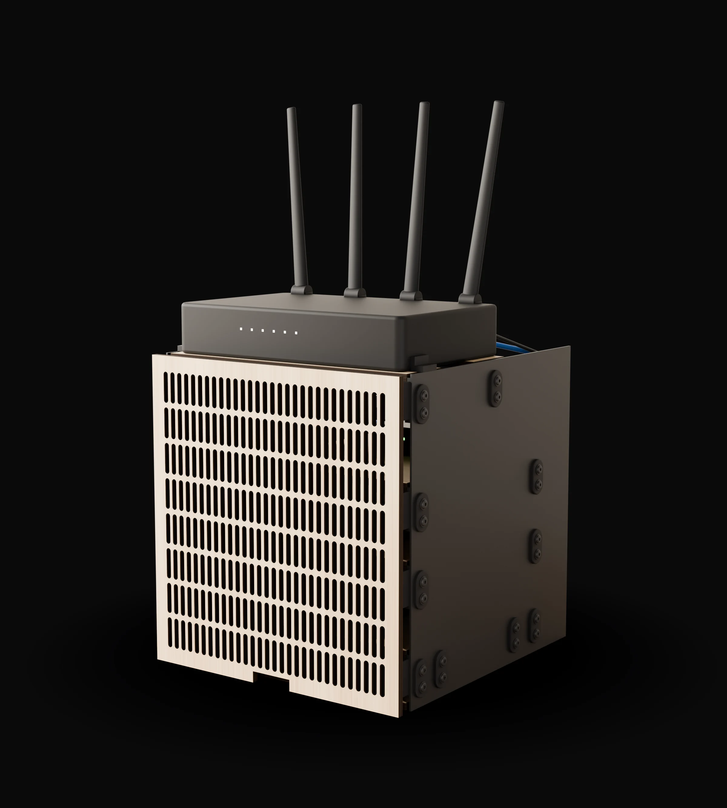

A home server cabinet. Built on three machines in the shop.
Black steel sides. Baltic birch levels.
Every joint is a printed bracket.
No bends. No welds.
Three computers, a switch and a router
in a box the size of a toaster.
Nineteen scored rounds to get here.
This page shows all of them.
The birch grille is held by eight pairs of magnets, one in each bracket nose and one in the grille back. It stands 15 mm off the devices so air gets in.
Laser-cut 6 mm Baltic birch. Every level drops onto pegs. A printed cradle under each computer keeps its air intake clear.
Plasma-cut 14 gauge, 5 mm holes on a 20 mm grid. Twenty printed PETG brackets bolt the levels to the plates. Forty M4 bolts. One hex key.
How it's made
Every piece of steel and birch is a rectangle with holes in it. The hard shapes, the corners and the noses that hold the magnets, come off the printer. That is the whole idea.
Up close
The rounds
Each round changed one thing. Then a fresh reviewer who had never seen the project scored the pictures on six things, out of ten each. The next round started from the lowest score. The line below is that story. Swipe the cards or tap a point.
Three concepts, one afternoon
The forks
Some of these were decided by the score. Some by a ruling from the person who has to live with the box. Both are shown.
The blind critic
What the box taught us
Build it
Cut files, print files and the build order are in the download. Measure your own devices first. The numbers on this page are for the boxes listed below.
Download the kit filesDXF for plasma and laser, STL and sliced 3MF for the printer, and the README with the build order.